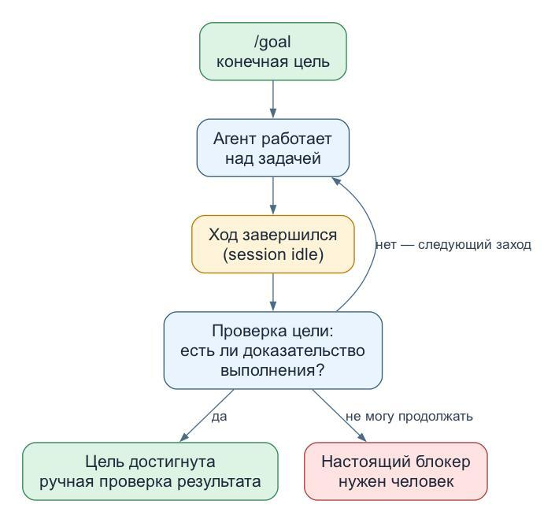

Залупливание кодового ассистента
Tagged as ai, llm, codeassistant
Written on 2026-08-19

На днях мне понадобилось добавить в 40ants-bots поддержку клиента мессенджера MAX. Раньше библиотека работала только с Telegram, а теперь хочется уметь поддерживать разные мессенджеры.
Решил сделать это с помощью AI-ассистента и заодно испытать подход Atomic Spec, о котором недавно писал. Попросил агента продумать внедрение, разложить его на отдельные спеки и описать в них весь нужный функционал. С этим он справился вполне неплохо.
А вот дальше хотелось максимально вайбово: дать модели реализовать всё самой, а потом только проверить результат. Тут и началось. Codex периодически останавливался и спрашивал: "Что делать дальше, хозяин?" Так происходит даже если явно попросить действовать автономно, решать максимум вопросов по дороге и иногда делать коммиты.
Я задумался: сейчас много пишут, что агентов надо запускать в цикле. Но как запустить цикл, если агент в случайный момент просто заканчивает работу?
Оказалось, что в Codex есть режим /goal. Передаёшь ему конечную цель, например «реализовать поддержку MAX по спекам и прогнать тесты». Дальше Codex хранит цель отдельно от очередного сообщения: после остановки проверяет, достигнута ли она, и запускает следующий заход, если нет. Агент должен либо показать, что работа действительно завершена, либо признать настоящий блокер.
То есть автономность здесь создаёт не промт «РАБОТАЙ АВТОНОМНО», а рантайм, у которого есть понятие незавершённой цели. В этом режиме Codex несколько часов работал над задачами из спек и вот только что сообщил о финальном результате. Теперь пойду смотреть, чего он там назалупливал.
Кстати, заодно решил посмотрел есть ли подобное в OpenCode. В нём такого режима из коробки нет, но есть плагины. danshapiro/opencode-goal-plugin старается буквально воспроизвести поведение Codex: после остановки снова запускает агента и не ставит лимитов по числу заходов, времени или токенам. Полная остановка — только когда модель доказала завершение, сообщила о блокере или её остановил человек.
prevalentWare/opencode-goal-plugin делает похожую вещь, но с предохранителями: бюджетами, лимитом автоматических ходов, проверкой отсутствия прогресса, учётом дочерних задач и compaction. А watzon/opencode-goal продолжает работу более консервативно: если в очередном ходе не было вызовов тулов, он не продолжает бесконечный разговор модели с собой.
Получается, danshapiro — для тех, кто хочет максимально буквальный /goal из Codex. prevalentWare — для тех, кто хочет оставить агента работать над большим проектом, но с ограничителями.
Надо будет обязательно сделать визуализацию таких циклов в Codabrus: смотреть, как кодовый ассистент сам себя залупливает, гораздо веселее, чем просто читать чат.
Created with passion by 40Ants